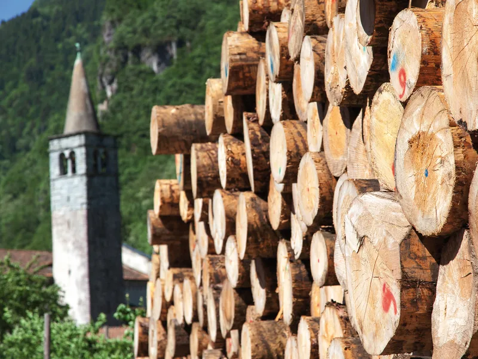
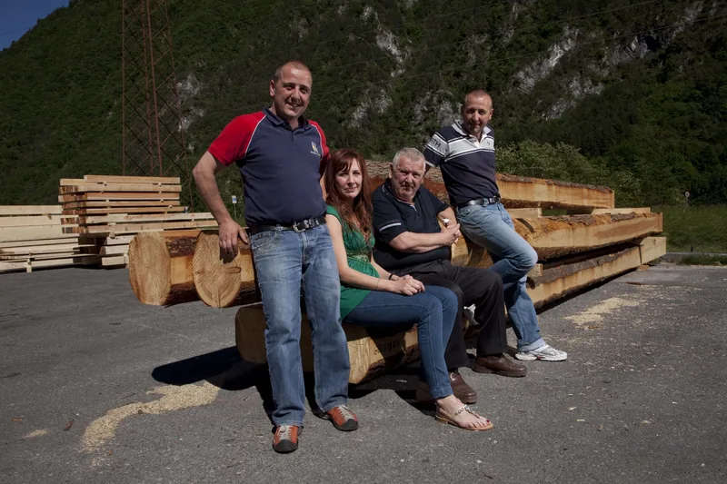
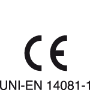
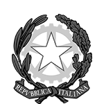
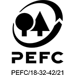
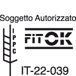

Il tetto nasce in segheria.Tetti in legno e legname da costruzione a Borgo Chiese (TN)
Dal 1972 tagliamo, essicchiamo e lavoriamo il legno qui a Giulis, in Valle del Chiese, e lo portiamo fino al cantiere.

Tetti e strutture in legno
Il legno lo scegliamo, lo tagliamo e lo lavoriamo noi, qui. Per questo possiamo seguire il tetto dal rilievo in cantiere fino agli elementi pronti da montare.
- Legno massello
- In gran parte da foreste del Trentino certificate PEFC, stagionato in essiccatoio. Naturale, senza colle. Siamo stati tra le prime aziende trentine con la marcatura CE per il massello a uso strutturale.
- Bilama e lamellare
- Da foreste di Svezia e Finlandia. Il bilama ha l'aspetto del massello con meno fessure da ritiro; il lamellare supera i due metri di altezza di sezione e permette anche le travi curve.
- Sovralzi e case al grezzo
- A X-lam o a telaio: si montano a secco e in poco tempo, e il legno aiuta a tenere l'umidità della casa in equilibrio.
- Soppalchi, solai, portici e chioschi
- Lo stesso servizio completo anche per i lavori più piccoli, compresi i cassonetti per le finestre da tetto.

Come nasce un tetto
-

Rilievo
Veniamo in cantiere a misurare, anche con il rilievo strumentale.
-

Progetto
Il nostro ufficio tecnico disegna il progetto esecutivo e la distinta di ogni pezzo.
-

Taglio
Il centro Hundegger a controllo numerico taglia travi e incastri, comprese le sedi per piastre a scomparsa, spinotti e bulloni.
-

Posa
Gli elementi arrivano già tagliati. Il montaggio lo fanno squadre di carpentieri specializzati della zona.
Legname da costruzione
Due linee di segagione Primultini, un impianto multilame e un refendino: la sezione e la lunghezza che vi servono, in tempi brevi. Per privati, magazzini e imprese.
 Travi su distinta
Travi su distinta Tavole da ponte
Tavole da ponte Perline
Perline Morali e listoni
Morali e listoni Listelli
Listelli Uso Fiume e uso Trieste
Uso Fiume e uso Trieste Prismato per edilizia
Prismato per edilizia Sottomisure
Sottomisure Pannelli a tre strati
Pannelli a tre strati
E poi piallato per faccia a vista, finestre per tetto, pannelli per armatura, compensati fenolici, OSB e multistrato. Perlinati in abete e larice, e pavimenti in legno come rivenditori autorizzati del Gruppo Parkemo.
- Essiccatoio
- Essiccazione a forno, per abbassare l'umidità del legno prima di lavorarlo.
- Marcatura CE
- Legno massiccio strutturale classificato secondo la resistenza, norma UNI EN 14081-1.
- Imballaggi da esportazione
- Certificazione fitosanitaria FITOK per il legno degli imballaggi destinati all'estero.
- Finiture
- Piallatura, spazzolatura, impregnazione per il legno esposto alle intemperie, rusticatura per l'effetto antico. Tutte le lavorazioni
Tetti che abbiamo fatto
Case, baite, alberghi, portici: alcune delle strutture uscite dalla nostra segheria.



La segheria dei Lombardi
Nel 1972 Franco Lombardi rileva con due soci la segheria di Giulis, in Valle del Chiese. All'inizio si fanno segati e commercio di legname. Oggi Franco guida l'azienda insieme ai figli Serafino, Mirco e Mirella.
Il legno segue tutta la strada qui, dall'arrivo dei tronchi al pezzo finito. E niente si butta: la segatura diventa pellet, gli scarti vanno agli impianti di riscaldamento a biomassa della regione.

Certificazioni

Marcatura CE Legno massiccio a uso strutturale, UNI EN 14081-1.

Consiglio superiore dei lavori pubblici Qualificati dal 2011 per la lavorazione di elementi strutturali in massello e lamellare.

PEFC Legno da foreste gestite in modo sostenibile.

FITOK Certificazione fitosanitaria per gli imballaggi da esportazione.
- Scarica i certificati
Domande che ci fanno spesso
Vendete legname anche ai privati?
Sì. Lavoriamo per privati, magazzini e imprese, e tagliamo sezione e lunghezza su misura, in tempi brevi.
Il tetto lo montate voi?
Il servizio va dal rilievo in cantiere alla posa in opera. Il montaggio lo fanno squadre di carpentieri specializzati della zona, con gli elementi già tagliati da noi.
Che legno usate per i tetti?
Massello di abete, larice, douglasia, rovere e castagno, in gran parte da foreste trentine certificate PEFC e stagionato in essiccatoio. Per le luci più grandi o le travi curve, bilama e lamellare di larice e abete da foreste di Svezia e Finlandia.
Il legno per le strutture è certificato?
Sì: il massello a uso strutturale ha la marcatura CE secondo la UNI EN 14081-1, e dal 2011 siamo qualificati dal Consiglio superiore dei lavori pubblici per la lavorazione di elementi strutturali in massello e lamellare.
Cosa serve per un preventivo?
Una telefonata allo 0465 621159 o due righe con le misure indicative e il comune del cantiere. Se avete disegni o foto del tetto attuale, mandateli: si parte da lì, poi veniamo a vedere.
Raccontateci il lavoro
Bastano due righe: che lavoro è, in che comune e più o meno che misure. Se avete un progetto o delle foto, meglio ancora. Poi vi richiamiamo noi.
Telefono 0465 621159 · info@segheria-lombardi.it